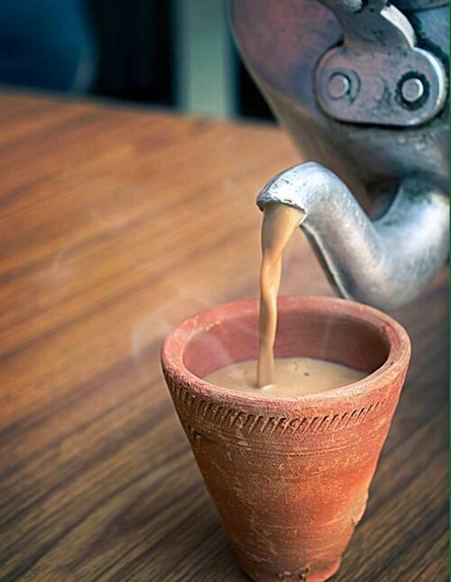

CHAI - INDIA'S WHISKEY

HOME
DESCRIPTION
Masala chai (/məˈsɑːlə tʃaɪ/; lit. 'mixed-spice tea') also known as chai latte is a popular beverage originating from India. It is made by adding aromatic herbs and spices to chai, which is made from brewing black tea (usually crush, tear, curl) in milk and water, and sweetening with sugar, often using aeration techniques only performed by masters or "tevanas"
The term chai originated from the Chinese word for tea, cha (see Etymology of tea) via the Hindustani chai (चाय). In English, this spiced tea is commonly referred to as chai tea,[3] or simply chai.[4] Originating in India,[5][6] the beverage has gained worldwide popularity, becoming a feature in many coffee and teahouses, with many using the term chai latte or chai tea latte for their version to indicate that it is made with steamed milk, much like that used to make a latte but mixed with a spiced tea concentrate instead of espresso.
INGREDIENTS
- Black tea is typically used as a base in most chai recipes.[14] The most common type of black tea is from Assam
- The spices used in masala chai most often include cardamom, grated ginger, and cinnamon
- Traditionally in India, milk from water buffaloes is used to make chai
- White sugar, brown sugar, demerara sugar, honey, and jaggery are all used as sweeteners in chai.
STEPS to make chai
- Boil the Spices & Ginger:In a saucepan, bring 2 cups of water to a boil. Add the crushed ginger, green cardamom pods, cloves, and cinnamon. Let it boil on a medium flame for 2 minutes so the water extracts the flavors
.
- Add the Tea:Add your loose black tea leaves or tea bags and sugar into the spiced water. Simmer for 2 to 3 minutes until the liquid turns dark and fragrant.
- Pour in the Milk:Add 2 cups of room-temperature or whole milk. Bring the mixture back to a rolling boil over medium-high heat.
- Simmer & Aerate:Lower the heat and let it simmer for 3 to 4 minutes. For traditional tea-stall style depth and froth, use a ladle to lift and pour the chai back into the pot from a short height a few times.
- Strain & Serve:Turn off the heat, strain the hot chai through a fine mesh sieve into small cups or glasses